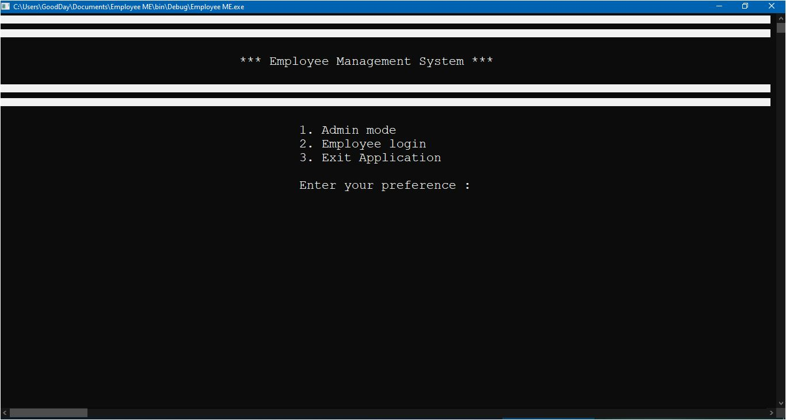
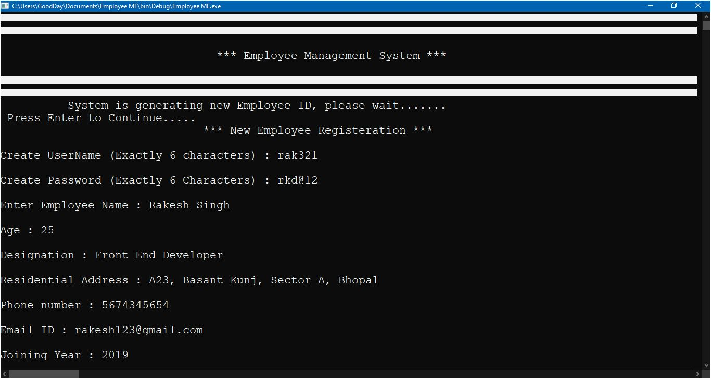
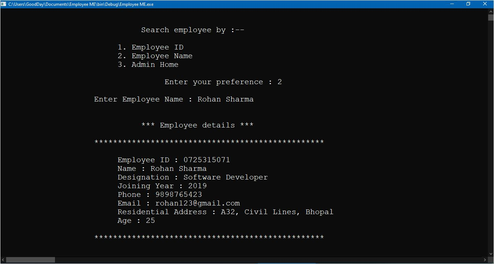
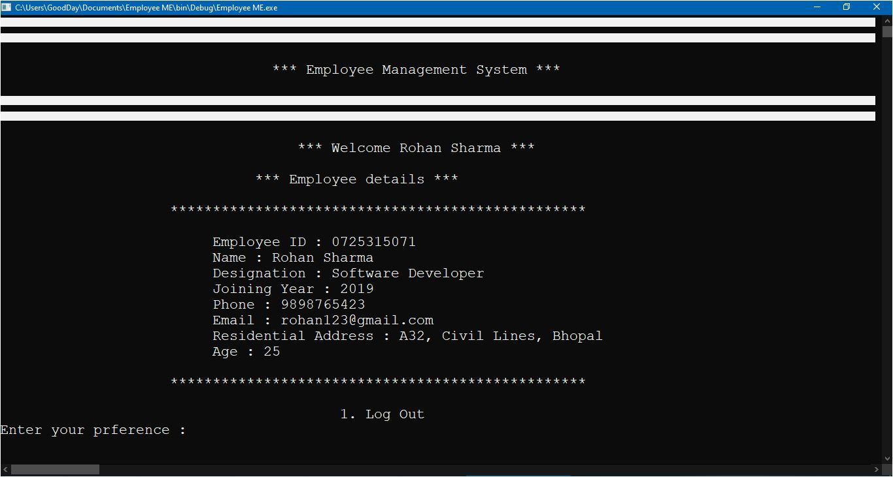

Employee ME is s console based application which is just for demonstration. It is an Employee Management System which can be used to store and retrieve the data of employees registered with the application. Basically, it was my first ever project in programming, so I tried to keep everything simple. I just made it for learning, practice and improving my coding skills. So, here I am not giving any formal technical documnetation. Its just basic information about the project.

Name : Employee ME
Based on : Employee Management System
Application type : Console based
Languages used : C++
IDE used : Codeblocks 20.03
So, Employee ME is a simple program written in C++ programming language , involving the usage of File Handling concept of C language.
stdio.h
conio.h
iostream.h
stdlib.h
time.h
string.h
unistd.h
This application runs on two different modes, Administration mode and Employee Login mode.
;An Administrator can register and search the employees by their name or Unique ID's. During Registeration, the application itself generates a unique 10 digit ID for every employee.
An Employee can login to his account by using his credentials and checkout his profile.
Anyways, this is a very small project with very few features, but yes I got to learn many new things like (time.h header file in C) during working on this program. It was because of this project only, that my fundamentals of programming like variable scope, functions, accessibility etc became clear to me. If you want to checkout the source code , you can visit the project files on the link below :-
Github Link of Project